Mirassol
Clube atual
7 jogos · 0 gols
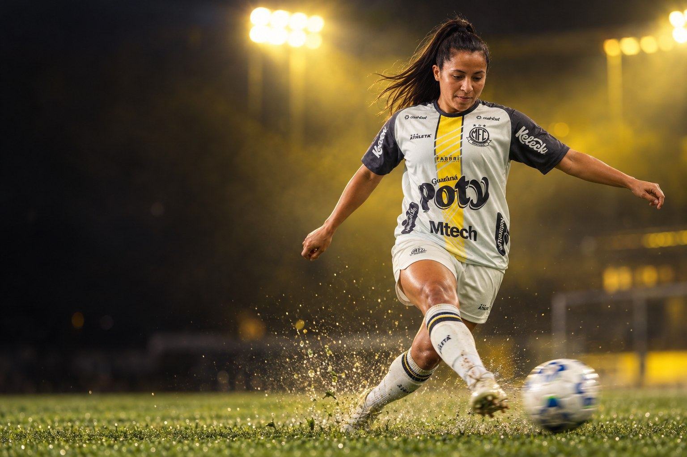
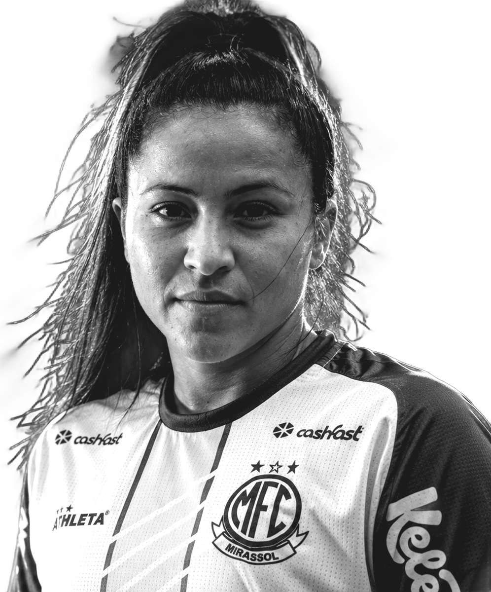
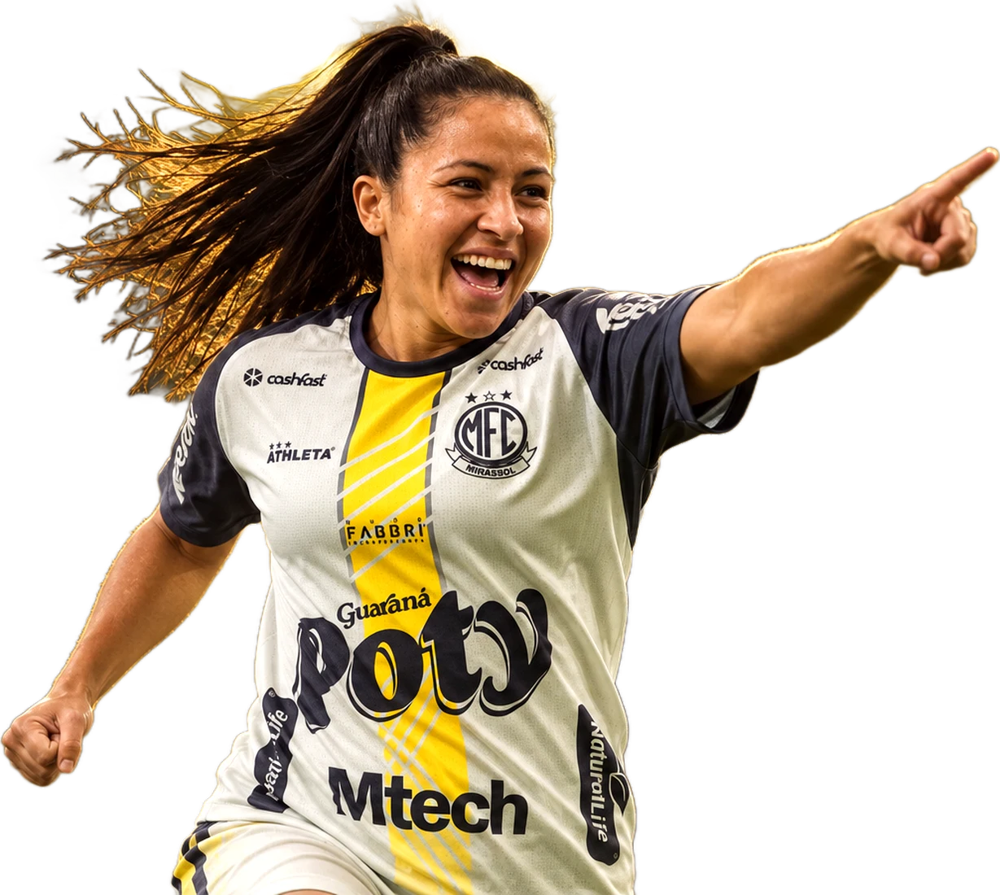
Futebolista profissional · Lateral-esquerda
Katielle Kauana Ribeiro Aguilera
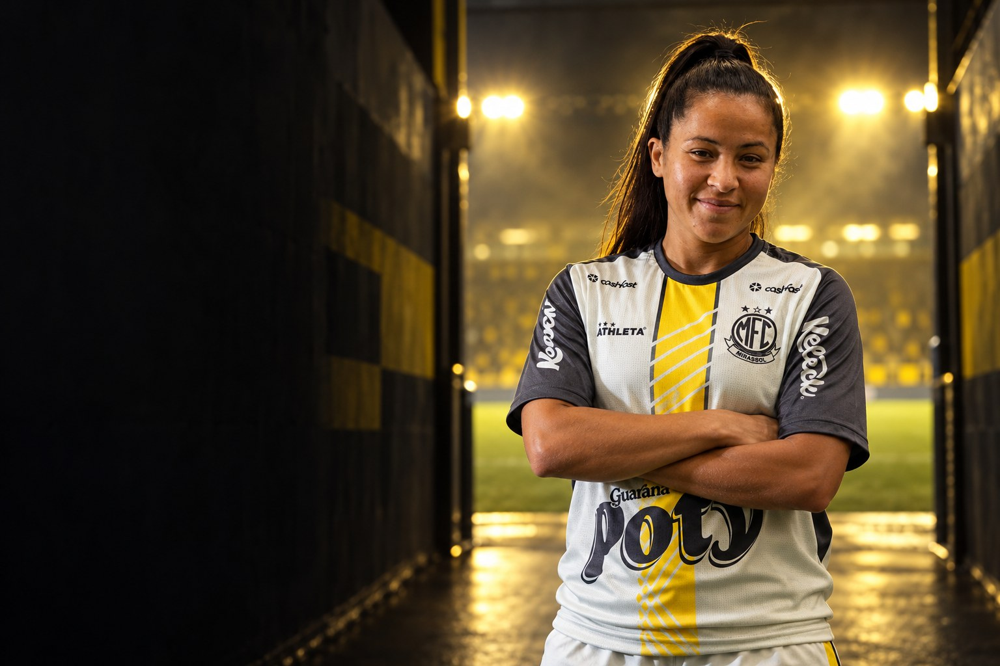
Sobre
Katielle Kauana Ribeiro Aguilera é futebolista profissional e atua como lateral esquerdo e ponta esquerda. Clube atual: Mirassol.
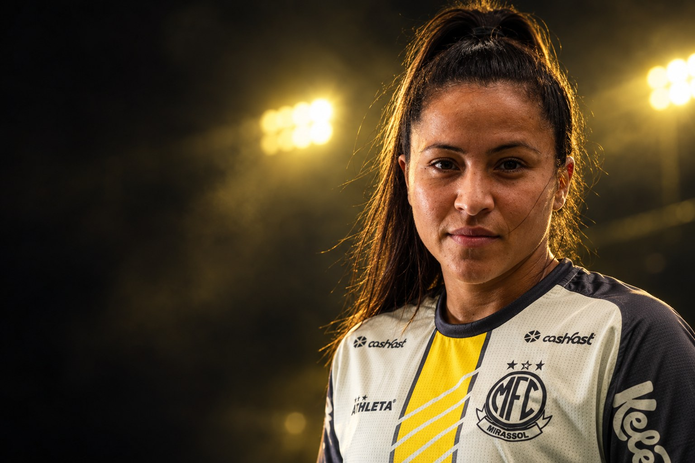
“Podem ter certeza que o meu desempenho dentro de campo será o melhor possível, com certeza vou dar muito orgulho para vocês.”Katielle, Recado à torcida em entrevista exclusiva à GrêmioTV, ao chegar às Gurias Gremistas, em março de 2025
Perfil
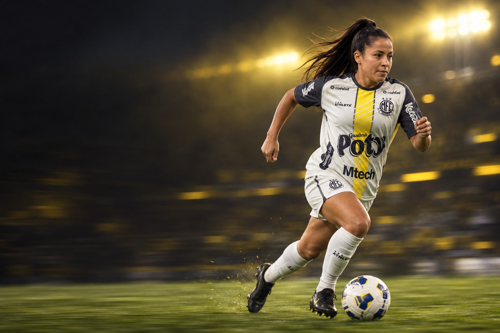
Carreira em números
Carreira
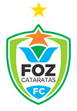
2014Foz Cataratas FC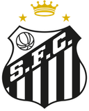
2019Santos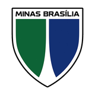
2021Minas Brasília FFClubes em destaque
7 jogos · 0 gols
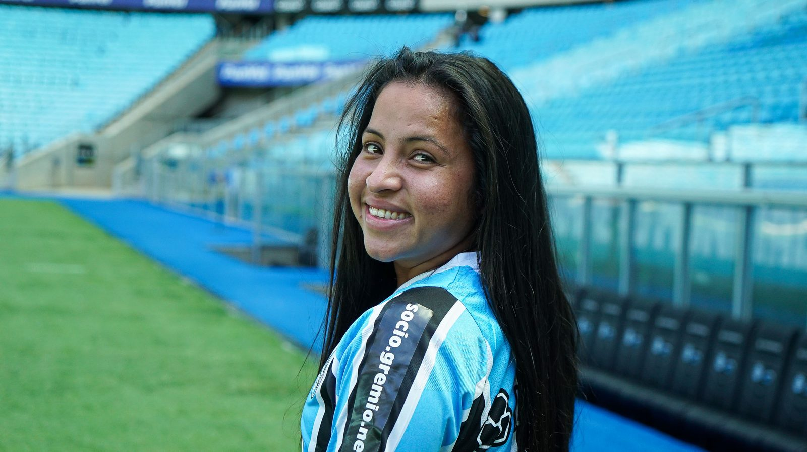

16 jogos · 1 gols
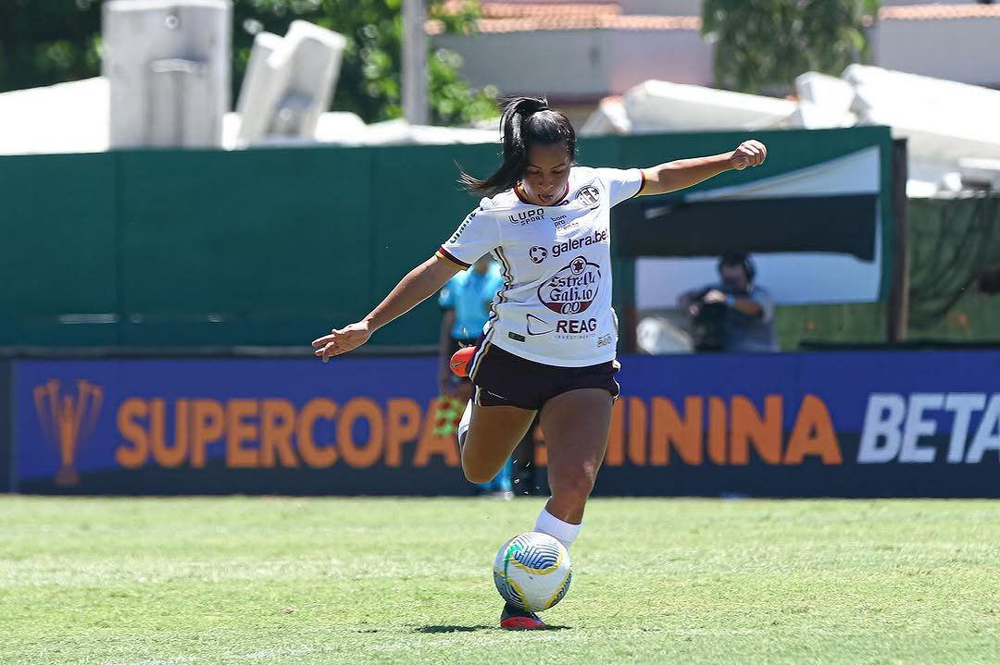
11 jogos · 0 gols
Conquistas
Galeria
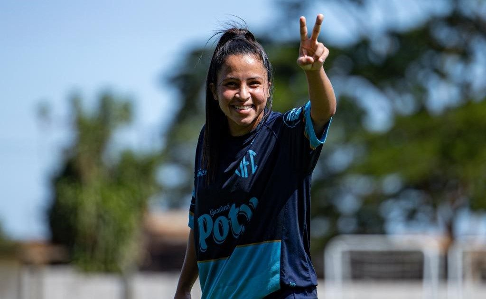
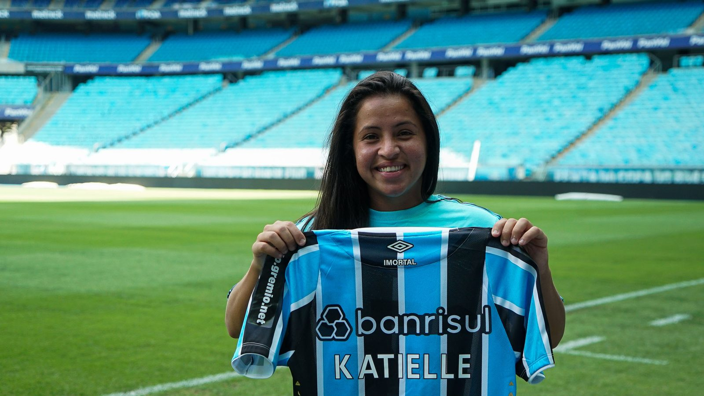
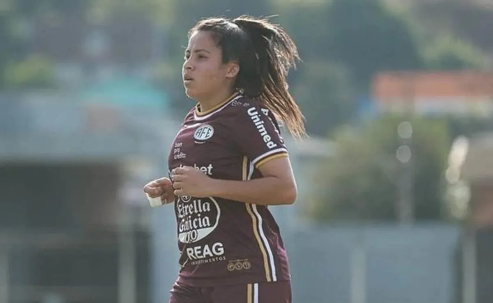
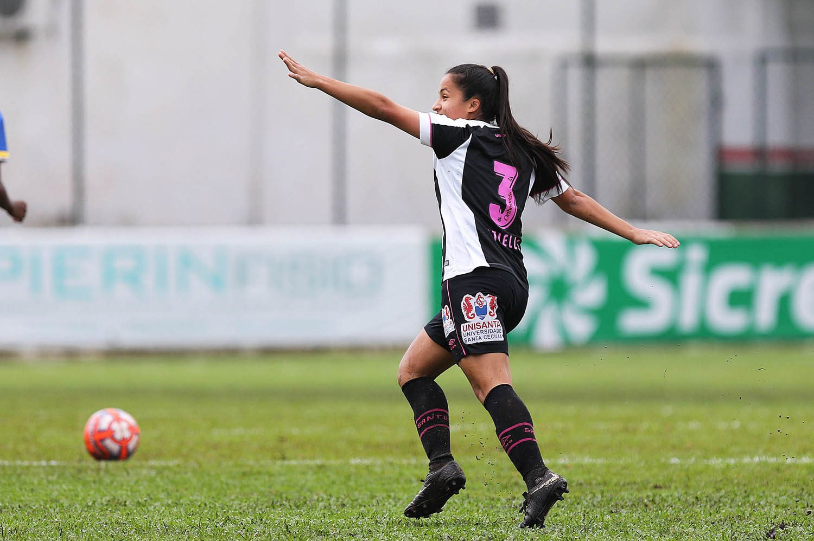
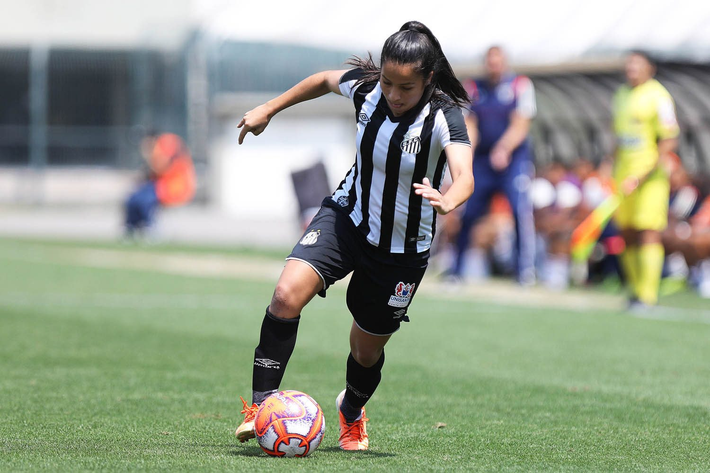
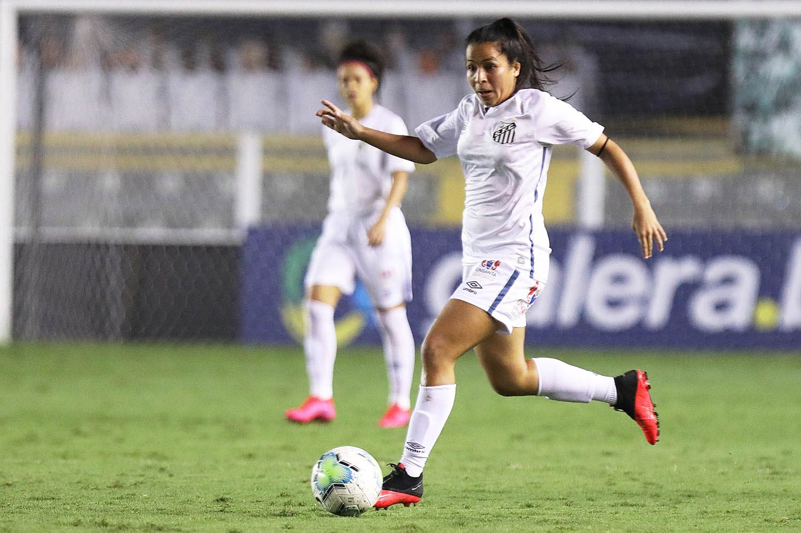
Currículo esportivo
| Temporada | Clube | País | Jogos | Gols | Assistências |
|---|---|---|---|---|---|
| 2026 | 7 | 0 | 0 | ||
| 2025 | 16 | 1 | 0 | ||
| 2024 | Ferroviária | 11 | 0 | 0 | |
| 2023 | 24 | 0 | 1 | ||
| 2022 | 19 | 1 | 0 | ||
| 2021 | Minas Brasília FF | 14 | 0 | 1 | |
| 2020 | Santos | 19 | 0 | 1 | |
| 2019 | Santos | 29 | 5 | 0 | |
| 2018 | Foz Cataratas FC | 16 | 8 | 0 | |
| 2017 | Foz Cataratas FC | 3 | 1 | 0 | |
| 2016 | Foz Cataratas FC | 1 | 0 | 0 | |
| 2015 | Foz Cataratas FC | – | – | – | |
| 2014 | Foz Cataratas FC | 4 | 0 | 0 |
Jogos, gols e assistências conforme a base estatística Ogol. O clube atual segue o anúncio oficial do clube.
Na mídia
Contato profissional
Assuntos profissionais, comerciais e de carreira: fale com a X Soccer, que faz a gestão da carreira da atleta.
Mídia kit
International profile